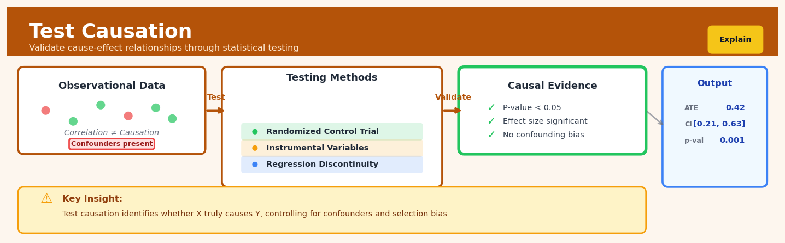

Test Causation#


The biggest mistake I see teams make is running a significance test on observational data and calling it causal evidence without checking for confounding variables or selection bias. True causal testing requires either randomization, natural experiments, or rigorous identification strategies like instrumental variables to isolate the treatment effect. Always ask yourself: what am I holding constant, and what alternative explanations haven't I ruled out yet?
The 60-Second Version#
What it does: Test Causation tells you whether a relationship you’ve found in your data is genuinely causal or just a coincidence.
When to use it: Use it when you need to know if changing one thing will actually cause a change in another—like whether a marketing campaign truly drives sales or just correlates with them.
What you get back: You receive statistical test results that either strengthen your confidence that the relationship is causal or reveal it’s likely spurious, guiding whether to act on the finding.
At a Glance
Difficulty |
Advanced |
Typical runtime |
Minutes on 100K rows |
What you bring |
Observational data with treatment/exposure variables, outcomes, and potential confounders |
What you get |
Test statistics and p-values indicating whether causation is supported or refuted |
Heuristix bucket |
Explain — Causal Analysis & Interpretation |
Correlation doesn’t imply causation, but Test Causation helps you determine when it actually might.
Learning Objectives#
After reading this chapter, a business user will be able to:
Distinguish between situations where correlation is sufficient (e.g., forecasting demand) and where causal claims are necessary (e.g., deciding whether to increase marketing spend based on past campaign data).
Interpret conditional independence test results, p-values from instrumental variable diagnostics, and falsification test outcomes to explain to stakeholders whether an observed relationship is likely causal or spurious.
Decide whether to invest resources in an intervention (such as a new pricing strategy or product feature) by evaluating the strength of causal evidence from test results against business risk tolerance.
After reading this chapter, a data scientist will be able to:
Implement the complete Test Causation workflow—including selecting appropriate conditional independence tests, specifying instrumental variables when available, and designing falsification tests for suspected confounders.
Calibrate significance thresholds and choose between parametric versus nonparametric test variants based on sample size, data distribution characteristics, and the severity of Type I versus Type II error consequences.
Diagnose common failure modes such as weak instruments, violations of exclusion restrictions, collider bias from improper conditioning, and insufficient variation in treatment assignment, then apply appropriate remedial strategies or acknowledge limitations.
Overview#
Test Causation is a statistical hypothesis testing framework for evaluating whether an observed association between variables reflects a genuine causal relationship rather than mere correlation or confounding. The technique belongs to the family of causal inference methods, specifically those focused on testing the validity of causal claims through a combination of conditional independence tests, instrumental variable diagnostics, and falsification procedures. Its core purpose is to provide practitioners with principled statistical tests that can strengthen or weaken causal interpretations of their data, moving beyond purely predictive or associational analyses toward actionable causal conclusions.
When to Use This#
Use this when:
You have identified a potential causal relationship and need to stress-test it — After exploratory analysis suggests that variable \(X\) causes outcome \(Y\), use Test Causation to formally evaluate whether this claim survives rigorous statistical scrutiny.
You need to distinguish correlation from causation for business decisions — When a marketing team claims their campaign increased sales, Test Causation helps determine whether observed associations reflect genuine causal effects or confounding factors.
You have access to instrumental variables or natural experiments — When your data includes variables that affect treatment assignment but not the outcome directly, Test Causation can leverage these for stronger causal identification.
You want to validate assumptions underlying a causal model — Before running difference-in-differences, regression discontinuity, or propensity score analyses, use Test Causation to verify that required assumptions (parallel trends, exclusion restrictions, etc.) are plausible.
You are conducting sensitivity analysis on causal estimates — To assess how robust your causal conclusions are to potential unmeasured confounding, use the Rosenbaum bounds and E-value diagnostics within Test Causation.
You need to test for reverse causality — When the direction of causation is ambiguous (does \(X\) cause \(Y\) or does \(Y\) cause \(X\)?), Granger-type tests and temporal precedence analyses can provide evidence.
You are building a causal graph and need to test conditional independence claims — Test Causation provides formal tests for whether variables are conditionally independent given a set of controls, which is essential for validating directed acyclic graph (DAG) structures.
Do NOT use this when:
You only have cross-sectional observational data with no instruments or design features — Without temporal ordering, instruments, or quasi-experimental variation, Test Causation cannot definitively establish causation; it can only characterise associations and test necessary (not sufficient) conditions.
Your goal is purely predictive — If you only need to forecast outcomes and do not need to understand mechanisms or intervention effects, simpler predictive models are more appropriate.
Sample sizes are too small for reliable conditional independence testing — Many tests within Test Causation require adequate sample sizes to achieve reasonable power; with \(n < 100\), results may be unreliable.
Questions This Answers#
Understanding What’s Actually Driving Our Results#
Did our new marketing campaign actually increase sales, or would they have gone up anyway?
Is the spike in customer complaints really because of the website redesign, or is something else going on?
Our Q3 revenue jumped 22% after we changed pricing — can we confidently say the pricing caused it?
When we see higher employee satisfaction scores after the new benefits package, how do we know it wasn’t just seasonal trends?
Did entering the European market drive our growth, or were we just riding a broader industry wave?
Deciding What Actions Will Actually Work#
If we invest another $2M in digital advertising, will we actually see more conversions or are we wasting money?
Should we roll out the new onboarding process company-wide, or was the 15% retention improvement in our pilot just luck?
Will cutting delivery times from 3 days to 2 days actually reduce our churn rate?
If we increase customer service headcount by 20%, can we expect it to genuinely improve retention or is that correlation misleading?
Our competitor just slashed prices and gained market share — if we match them, will we get similar results?
Avoiding Costly Mistakes Based on False Patterns#
Are we crediting the wrong initiative for our turnaround when something else deserves the credit?
Before we cancel the loyalty program because engagement is down, can we verify it’s actually ineffective and not just correlation with other factors?
Is the relationship between training hours and sales performance real, or are our best performers just choosing to train more?
We’re seeing poor performance in stores with new managers — is it the managers, or did they inherit struggling locations?
How It Works#
Imagine you’re a detective investigating whether a new coffee shop truly caused the increase in foot traffic on Main Street, or whether something else is responsible. You notice that foot traffic went up right after the coffee shop opened—but you also discover that a new subway station opened the same week. To figure out what’s really going on, you test a series of predictions: If the coffee shop caused the traffic, then people should be coming from the coffee shop, not just walking past it. If the subway caused it, traffic should spike at rush hour regardless of the coffee shop’s hours. You run through each scenario systematically, checking whether the pattern you see matches what you’d expect if your theory were true, and whether alternative explanations can be ruled out.
Test Causation works the same way with data. Instead of assuming that two variables moving together means one causes the other, it runs a battery of diagnostic tests to see if the causal story holds up under scrutiny.
OBSERVED PATTERN TESTING PROCESS
X → Y ? ┌────────────────────────┐
(X causes Y?) │ Test 1: Independence │
│ Check if Y moves when │
Example: │ X changes (✓ passes) │
Coffee shop → Foot traffic └──────────┬─────────────┘
↓
┌────────────────────────┐
CONFOUNDERS? │ Test 2: Confounders │
Z │ Does Z (subway) explain│
╱ ╲ │ both? Control for Z │
╱ ╲ │ (✓ X still predicts Y) │
X Y └──────────┬─────────────┘
↓
┌────────────────────────┐
│ Test 3: Reverse Check │
VERDICT │ Does Y predict past X? │
│ (✗ no—good sign!) │
X → Y is plausible └──────────┬─────────────┘
(coffee shop likely ↓
drives foot traffic) ┌────────────────────────┐
│ Test 4: Falsification │
Alternative explanations │ Are there patterns that│
systematically ruled out │ break the causal story?│
│ (✗ none found) │
└────────────────────────┘
Step 1: Establish basic association. First, the technique checks whether X and Y actually move together in your data. If there’s no relationship at all, there’s nothing to test—you can stop here. This is like confirming that foot traffic really did increase after the coffee shop opened.
Step 2: Test for confounding variables. Next, it examines whether other variables (confounders) might be creating a fake relationship. It does this by checking if the X-Y connection disappears or weakens substantially when you account for these other factors. If coffee shop opening and foot traffic are only connected because the subway opened, controlling for subway timing should make the coffee shop effect vanish.
Step 3: Check temporal ordering. The method looks at whether the supposed cause precedes the effect. It tests whether future values of Y can predict past values of X—if they can, something’s wrong with your causal story. Foot traffic today shouldn’t predict whether a coffee shop opened last month.
Step 4: Run falsification tests. Finally, it looks for patterns that shouldn’t exist if your causal theory is correct. For instance, if the coffee shop causes traffic, you shouldn’t see traffic spikes on days when the shop was closed. Finding these contradictions weakens the causal claim.
Step 5: Aggregate the evidence. Each test produces a pass or fail signal. Test Causation doesn’t give you absolute proof, but it gives you a scorecard showing how many diagnostic tests your causal theory survived. More passes mean stronger evidence for causation.
The key insight: Test Causation works by systematically trying to break your causal theory—if it survives multiple attempts to disprove it through different statistical tests, you gain confidence it’s more than just correlation.
The Intuition#
Imagine you are a detective investigating whether a suspect committed a crime. You cannot directly observe the crime being committed, but you can gather circumstantial evidence. Some evidence is consistent with guilt but does not prove it — the suspect was in the city that day, owns a similar vehicle, and had a motive. Other evidence is more discriminating — the suspect’s fingerprints at the scene, DNA on the weapon, or an alibi that can be verified. A good detective knows that correlation (being in the city) is not causation (committing the crime), and systematically tests alternative explanations before reaching a conclusion.
Test Causation works the same way. It does not magically prove causation from observational data — that would require either a randomised experiment or very strong structural assumptions. Instead, it provides a battery of statistical tests that can falsify or strengthen causal claims. Each test examines a necessary condition for causation. If \(X\) truly causes \(Y\), then certain patterns must hold in the data: \(X\) should temporally precede \(Y\), controlling for confounders should not eliminate the association, instrumental variables should satisfy their exclusion restrictions, and so forth. When a proposed causal relationship fails these tests, we have evidence against it. When it passes, our confidence grows — though we never achieve certainty.
The key insight is that causation implies a whole family of statistical constraints, and we can test many of them. Consider the claim that smoking causes lung cancer. We cannot (ethically) randomise people to smoke. But we can test: Does smoking precede cancer diagnosis? Does the association persist after controlling for age, occupation, and diet? Do genetic variants that predispose people to smoke (an instrument) predict cancer through the smoking pathway? Does the dose-response relationship hold? Each test that the data passes makes the causal claim more credible. Test Causation systematises this logic, providing formal statistical procedures for each type of test, along with appropriate corrections for multiple testing and sensitivity analyses for unmeasured confounding.
The Mathematics#
Problem Setup and Notation#
Let \(Y \in \mathbb{R}\) denote the outcome variable of interest, \(X \in \mathbb{R}^p\) the treatment or exposure variable(s) whose causal effect we wish to test, \(\mathbf{W} \in \mathbb{R}^q\) a vector of observed potential confounders, and \(U\) a latent (unobserved) confounder. We observe \(n\) independent samples \(\{(Y_i, X_i, \mathbf{W}_i)\}_{i=1}^n\).
We work within the potential outcomes framework. For each unit \(i\), let \(Y_i(x)\) denote the potential outcome that would be observed if \(X_i\) were set to \(x\). The average causal effect of changing \(X\) from \(x_0\) to \(x_1\) is:
Under the Stable Unit Treatment Value Assumption (SUTVA), each unit’s potential outcome depends only on its own treatment, not on others’ treatments.
Conditional Independence Tests#
The foundational test for causal relationships is the conditional independence test. Under a correctly specified causal DAG, certain conditional independence relationships must hold. If \(X\) causes \(Y\) with no confounding (i.e., all confounders are in \(\mathbf{W}\)), then:
must hold for any potential unmeasured confounder \(U\). While we cannot test this directly (since \(U\) is unobserved), we can test observable implications.
For continuous variables, we use the partial correlation test. The partial correlation between \(Y\) and \(X\) given \(\mathbf{W}\) is:
Under the null hypothesis \(H_0: \rho_{YX \cdot \mathbf{W}} = 0\), the test statistic:
follows a \(t\)-distribution with \(n - q - 2\) degrees of freedom.
For general relationships, we employ the Generalised Covariance Measure (GCM) test. Let \(\hat{r}_Y = Y - \hat{\mathbb{E}}[Y \mid \mathbf{W}]\) and \(\hat{r}_X = X - \hat{\mathbb{E}}[X \mid \mathbf{W}]\) be residuals from nonparametric regressions. The GCM test statistic is:
which is asymptotically normal under the null of conditional independence.
Instrumental Variable Tests#
When an instrument \(Z\) is available, we test two key conditions:
Relevance (First Stage): The instrument must predict treatment. We test \(H_0: \pi = 0\) in the first-stage regression:
The F-statistic for this test should exceed 10 (Stock-Yogo weak instrument threshold).
Exclusion Restriction (Overidentification): With multiple instruments \(\mathbf{Z} \in \mathbb{R}^m\) where \(m > p\), the Sargan-Hansen J-test evaluates whether instruments are uncorrelated with the structural error. The test statistic is:
where \(\hat{\mathbf{e}}\) are 2SLS residuals. Under the null that all instruments are valid, \(J \sim \chi^2_{m-p}\).
Granger Causality Test#
For time series data, the Granger causality test examines whether past values of \(X\) improve prediction of \(Y\) beyond past values of \(Y\) alone. Consider the VAR model:
The null hypothesis \(H_0: \gamma_1 = \gamma_2 = \cdots = \gamma_L = 0\) is tested via an F-test comparing restricted and unrestricted models:
Warning
Granger causality is a misnomer — it tests predictive precedence, not true causation. A Granger-causal relationship can exist without true causation (e.g., if \(X\) and \(Y\) are both caused by an unobserved \(U\) with different lags).
Sensitivity Analysis: Rosenbaum Bounds#
To assess robustness to unmeasured confounding, we compute Rosenbaum bounds. Let \(\Gamma \geq 1\) parameterise the maximum odds ratio by which two units with identical observed covariates can differ in their probability of treatment due to unmeasured confounding. Formally, for any two units \(i, j\) with \(\mathbf{W}_i = \mathbf{W}_j\):
where \(\pi_i = P(X_i = 1 \mid \mathbf{W}_i, U_i)\).
For each value of \(\Gamma\), we compute bounds on the p-value for the treatment effect. The sensitivity value \(\tilde{\Gamma}\) is the smallest \(\Gamma\) at which the causal conclusion would be overturned.
The E-Value#
The E-value quantifies the minimum strength of association that an unmeasured confounder would need with both treatment and outcome to fully explain away an observed effect. For a risk ratio \(RR\) with confidence interval lower bound \(RR_{\text{lower}}\):
A large E-value indicates that only a very strong unmeasured confounder could explain the observed association.
Assumptions#
Consistency: \(Y_i = Y_i(X_i)\) — the observed outcome equals the potential outcome for the received treatment.
Positivity: \(0 < P(X = x \mid \mathbf{W}) < 1\) for all \(x\) in the support and all \(\mathbf{W}\).
No interference: One unit’s treatment does not affect another’s outcome.
Correct model specification: Tests based on residuals require that the conditional expectation functions are correctly specified (or consistently estimated).
Understanding the Mathematics#
Conditional Independence Test#
The equation:
Read it aloud:
“The probability of Y given both X and Z equals the probability of Y given just Z.”
What each symbol means:
P() = probability of something happening
Y = the outcome variable we care about (e.g., customer churn)
X = the treatment or intervention we’re testing (e.g., discount received)
Z = the confounder or control variable (e.g., customer income)
| = “given” or “conditional on knowing”
A concrete numerical example:
Suppose we’re testing whether email promotions (X) cause purchases (Y), controlling for customer age group (Z). If P(Purchase | Email, Age 25-34) = 0.15 and P(Purchase | Age 25-34) = 0.15, then the email adds nothing once we know age. The promotion doesn’t cause purchases—age drives both email targeting and purchase behavior.
Why this equation matters:
If this equality holds, X doesn’t cause Y; any apparent relationship is fully explained by the confounder Z, meaning your intervention will fail in practice.
Pearl’s Do-Calculus Intervention#
The equation:
Read it aloud:
“The probability of Y when we actively set X to value x is not equal to the probability of Y when we simply observe X equals x.”
What each symbol means:
do(X = x) = forcibly setting X to a specific value through intervention
P(Y | X = x) = observing Y when X naturally equals x (no intervention)
≠ = not equal to
A concrete numerical example:
A hospital observes that patients receiving Drug X have 40% recovery rates: P(Recovery | Drug X) = 0.40. But when they randomly assign Drug X (intervention), recovery jumps to 65%: P(Recovery | do(Drug X)) = 0.65. Why? Doctors previously gave Drug X only to sicker patients. Observation misleads; intervention reveals true effect.
Why this equation matters:
Confusing observation with intervention leads to disastrous decisions—you’ll predict the wrong outcome when you actually deploy your solution in the real world.
Instrumental Variable Estimator#
The equation:
Read it aloud:
“The instrumental variable estimate of the causal effect equals the covariance between the instrument Z and outcome Y, divided by the covariance between the instrument Z and treatment X.”
What each symbol means:
β̂ᵢᵥ = estimated causal effect using instrumental variables
Cov(A, B) = how much variables A and B move together
Z = the instrument (affects treatment but not outcome directly)
Y = outcome of interest
X = treatment variable
A concrete numerical example:
We want to know if education (X) causes income (Y), but ability confounds both. We use distance to college (Z) as an instrument. Suppose Cov(Distance, Income) = -2,400 (closer colleges → \(2,400 higher income) and Cov(Distance, Education) = -0.8 years. Then β̂ᵢᵥ = -2,400 / -0.8 = \)3,000 per year of education. Each additional year of schooling caused by college proximity increases income by $3,000.
Why this equation matters:
When randomized experiments are impossible, instrumental variables let us extract causal estimates from observational data—the difference between guessing and knowing.
The Big Picture#
The mathematics of Test Causation seeks to distinguish genuine cause-and-effect from statistical mirages created by confounders, selection bias, and reverse causality. We use these specific tools—conditional independence tests, do-calculus, and instrumental variables—because simpler methods like correlation or regression cannot separate “X predicts Y” from “X causes Y.” The mathematical framework forces us to explicitly model the difference between passively observing data and actively intervening in a system. In one sentence: these equations mathematically formalize the question “If I change X on purpose, will Y actually move, or was their relationship just a coincidence?”
Python Implementation#
import numpy as np
import pandas as pd
from scipy import stats
from statsmodels.tsa.stattools import grangercausalitytests
from statsmodels.regression.linear_model import OLS
from statsmodels.sandbox.regression.gmm import IV2SLS
import warnings
warnings.filterwarnings('ignore')
# Set random seed for reproducibility
np.random.seed(42)
# =============================================================================
# Example 1: Conditional Independence Test (Partial Correlation)
# =============================================================================
print("=" * 60)
print("Example 1: Partial Correlation Test for Conditional Independence")
print("=" * 60)
# Generate synthetic data where X causes Y, with confounder W
n = 500
W = np.random.normal(0, 1, n) # Confounder
X = 0.5 * W + np.random.normal(0, 1, n) # Treatment affected by confounder
Y = 0.8 * X + 0.3 * W + np.random.normal(0, 0.5, n) # Outcome
# Create DataFrame
df = pd.DataFrame({'Y': Y, 'X': X, 'W': W})
def partial_correlation_test(y, x, controls, data):
"""
Test conditional independence via partial correlation.
Returns partial correlation coefficient, t-statistic, and p-value.
"""
# Residualise Y on controls
y_on_controls = OLS(data[y], np.column_stack([np.ones(len(data)), data[controls]])).fit()
resid_y = y_on_controls.resid
# Residualise X on controls
x_on_controls = OLS(data[x], np.column_stack([np.ones(len(data)), data[controls]])).fit()
resid_x = x_on_controls.resid
# Compute correlation of residuals
r_partial = np.corrcoef(resid_y, resid_x)[0, 1]
# Compute test statistic
q = len(controls) if isinstance(controls, list) else 1
n = len(data)
t_stat = r_partial * np.sqrt((n - q - 2) / (1 - r_partial**2))
p_value = 2 * (1 - stats.t.cdf(abs(t_stat), df=n - q - 2))
return r_partial, t_stat, p_value
r, t, p = partial_correlation_test('Y', 'X', ['W'], df)
print(f"Partial correlation (Y, X | W): {r:.4f}")
print(f"t-statistic: {t:.4f}")
print(f"p-value: {p:.6f}")
print(f"Conclusion: {'Reject' if p < 0.05 else 'Fail to reject'} conditional independence")
print(f"Interpretation: Evidence {'supports' if p < 0.05 else 'does not support'} X -> Y association after controlling for W")
# =============================================================================
# Example 2: Granger Causality Test
# =============================================================================
print("\n" + "=" * 60)
print("Example 2: Granger Causality Test for Time Series")
print("=" * 60)
# Generate time series where X Granger-causes Y
T = 200
X_ts = np.zeros(T)
Y_ts = np.zeros(T)
for t in range(2, T):
X_ts[t] = 0.5 * X_ts[t-1] + np.random.normal(0, 1)
Y_ts[t] = 0.3 * Y_ts[t-1] + 0.4 * X_ts[t-1] + np.random.normal(0, 1)
ts_data = pd.DataFrame({'Y': Y_ts[10:], 'X': X_ts[10:]}) # Drop burn-in
# Run Granger causality test
print("\nTesting: Does X Granger-cause Y
## Visualisations


## Using This in Heuristix
### What Data You'll Need
The Test Causation node expects a dataset where you've already identified a potential causal relationship to test. You need:
- **Treatment variable** (categorical or binary): The presumed cause
- **Outcome variable** (numeric): The effect you're measuring
- **Covariates** (numeric or categorical): Other variables that might confound the relationship
- **Optional instrumental variable** (any type): A variable that affects treatment but not outcome directly
Your data should be in **one row per observation** format:
| customer_id | received_email | purchase_amount | age | prior_purchases |
|-------------|----------------|-----------------|-----|-----------------|
| 1001 | 1 | 45.20 | 34 | 3 |
| 1002 | 0 | 0.00 | 28 | 1 |
| 1003 | 1 | 120.50 | 45 | 12 |
### Configuration Parameters
| Parameter | What It Controls | Default | When to Change |
|-----------|------------------|---------|----------------|
| **Treatment Column** | Which variable represents your causal intervention | (required) | Select the column you believe causes changes in the outcome |
| **Outcome Column** | What you're measuring as the effect | (required) | Choose your key metric of interest |
| **Covariate Columns** | Variables to control for confounding | (none) | Add any variables that might influence both treatment and outcome |
| **Instrumental Variable** | Variable for IV-based tests | (none) | Use when you suspect unmeasured confounding and have a valid instrument |
| **Significance Level** | Threshold for statistical tests | 0.05 | Lower to 0.01 for more conservative tests; raise to 0.10 for exploratory work |
| **Test Methods** | Which causal tests to run | All | Disable specific tests if you know certain assumptions don't hold for your data |
| **Balance Threshold** | Maximum acceptable covariate imbalance | 0.10 | Tighten to 0.05 for stricter balance requirements |
### What You'll Get Back
The node produces three types of outputs:
**Diagnostic Metrics Table** shows:
- **Conditional independence p-values**: Tests whether treatment and outcome remain associated after controlling for covariates (low p-value supports causation)
- **Covariate balance statistics**: Standardized mean differences showing whether treatment and control groups differ on confounders
- **IV validity scores**: F-statistics and over-identification tests (when using an instrument)
**Visualization Panel** displays:
- Balance plots comparing covariate distributions across treatment groups
- Residual plots showing patterns after removing confounder effects
- Sensitivity curves indicating how robust findings are to unmeasured confounding
**Enhanced Dataset** (passed downstream) includes:
- `causal_test_passed`: Boolean flag for whether the relationship survived testing
- `estimated_effect`: Point estimate of causal effect size
- `sensitivity_score`: How fragile the finding is (0-1 scale)
### Connecting Downstream
Most commonly, you'll connect Test Causation to:
- **Treatment Effect Estimator** nodes to quantify causal impacts after validation
- **Filter** nodes to subset data where causal_test_passed = True for downstream modeling
- **Report** nodes to document your causal findings with the diagnostic visualizations
### Quick Start: Testing an Email Campaign
1. **Connect your dataset** containing campaign exposure, customer purchases, and demographics
2. **Set Treatment Column** to your campaign flag (e.g., `received_email`)
3. **Set Outcome Column** to your conversion metric (e.g., `purchase_amount`)
4. **Add Covariate Columns** like customer age, tenure, and prior purchase history
5. **Run the node** and check the conditional independence p-value first
6. **Review balance plots** to see if treatment/control groups are comparable
7. **Examine sensitivity score** to understand how robust your conclusion is
### Pro Tips
**Start with visualization.** Before trusting the p-values, look at the balance plots. If your treatment and control groups are wildly different on covariates, no statistical test will save you.
**The absence of a test failure isn't proof of causation.** These tests can rule out obviously spurious relationships, but passing all tests doesn't guarantee causality—it just means your data is consistent with it.
**Use domain knowledge to select covariates.** More isn't always better. Include variables that plausibly affect both treatment assignment and outcomes, not every column in your dataset.
**Pay attention to sample size warnings.** Many of these tests lose power with small datasets. If you have fewer than 100 observations, interpret results cautiously.
**Chain this with randomization checks.** If your data comes from an experiment, use Test Causation to verify randomization worked. For observational data, use it to stress-test your causal assumptions.
## Config Recipes
### Recipe 1: Quick Exploration
**When to use:** Initial assessment of potential causal relationships in a new dataset when you need rapid feedback on whether deeper analysis is warranted.
**Settings:**
| Parameter | Value | Why |
|-----------|-------|-----|
| `significance_level` | 0.10 | Higher threshold reduces false negatives during exploration |
| `n_permutations` | 100 | Minimal permutations for speed while maintaining directional accuracy |
| `bootstrap_samples` | 50 | Low sampling reduces computation time |
| `conditional_tests` | False | Skip expensive conditional independence checks |
| `instrument_search` | "none" | Disable instrumental variable search entirely |
**What you get:** Fast execution (seconds to minutes) with liberal causal signal detection that flags candidates for follow-up investigation.
**Trade-off:** High false positive rate means many flagged relationships will fail under rigorous testing.
### Recipe 2: Production-Grade Validation
**When to use:** Final validation before deploying a causal model to production systems or publishing research findings requiring statistical rigor.
**Settings:**
| Parameter | Value | Why |
|-----------|-------|-----|
| `significance_level` | 0.01 | Stringent threshold for strong evidence requirements |
| `n_permutations` | 5000 | High permutation count for precise null distribution |
| `bootstrap_samples` | 1000 | Robust confidence interval estimation |
| `conditional_tests` | True | Full conditional independence battery |
| `instrument_search` | "exhaustive" | Test all candidate instruments systematically |
| `falsification_tests` | ["placebo", "negative_control"] | Multiple robustness checks |
| `multiple_testing_correction` | "bonferroni" | Conservative family-wise error control |
**What you get:** Maximum confidence in causal claims with comprehensive diagnostic output and minimal false discovery risk.
**Trade-off:** Computation time increases 50-100x compared to exploration settings; may reject true but weak effects.
### Recipe 3: High Confounding Environment
**When to use:** Observational data from complex systems (healthcare, economics, social networks) where unmeasured confounding is highly suspected.
**Settings:**
| Parameter | Value | Why |
|-----------|-------|-----|
| `significance_level` | 0.05 | Standard threshold balances concerns |
| `sensitivity_analysis` | True | Essential for quantifying hidden confounder impact |
| `sensitivity_gamma_range` | [1.0, 3.0] | Spans weak to strong unmeasured confounding |
| `instrument_search` | "candidate_only" | Focus on pre-specified instruments |
| `required_instruments` | 2 | Demand multiple independent instruments for triangulation |
| `conditional_tests` | True | Critical for identifying measured confounders |
| `confounder_adjustment` | "doubly_robust" | Protection against model misspecification |
**What you get:** Explicit bounds on how strong unmeasured confounding must be to nullify conclusions, enabling honest uncertainty quantification.
**Trade-off:** Requires domain knowledge to specify candidate instruments; may fail to find valid causal estimates if confounding is severe.
### Recipe 4: Time-Series Intervention Detection
**When to use:** Detecting whether policy changes, product launches, or system interventions had genuine causal effects in temporal data (surprisingly effective where standard methods struggle).
**Settings:**
| Parameter | Value | Why |
|-----------|-------|-----|
| `temporal_structure` | "autoregressive" | Respects time-ordering constraints |
| `lag_range` | [1, 12] | Tests delayed causal effects |
| `granger_causality` | True | Leverage temporal precedence information |
| `pre_period_min` | 20 | Sufficient baseline for counterfactual construction |
| `significance_level` | 0.05 | Standard evidence threshold |
| `seasonality_adjustment` | True | Removes confounding cyclical patterns |
| `structural_break_test` | True | Distinguishes intervention from natural shifts |
**What you get:** Time-aware causal inference that separates intervention effects from trends, seasonality, and autocorrelation.
**Trade-off:** Requires sufficient pre-intervention data; cannot detect effects that perfectly coincide with existing trends.
## Business Applications
**Financial Services**
A mid-sized UK mortgage lender was spending £800K annually on fraud prevention systems that flagged 12% of applications for manual review, but internal audits revealed that 78% of these flags were false positives. The team observed that applications from certain postcodes correlated with higher fraud rates, but couldn't determine whether the postcode itself was causal or merely proxying for other confounding factors like income instability or property valuations. By applying Test Causation methods—specifically conditional independence tests controlling for employment history, credit score, and property characteristics—they isolated genuinely causal risk factors and eliminated spurious correlates. The refined model reduced false positives by 64%, cutting review costs to £290K while maintaining fraud detection rates, and eliminating discriminatory proxies that posed regulatory risk.
**Retail**
An e-commerce fashion retailer with 1.8M SKUs noticed that product pages featuring user-generated photos showed 23% higher conversion rates than those with only professional images. Before investing $2.3M in a platform to solicit customer photos across their entire catalogue, they used Test Causation to rule out confounding: perhaps popular items naturally attracted more user photos, and popularity—not the photos themselves—drove conversions. Instrumental variable analysis using the timing of email campaigns encouraging photo uploads (which randomly affected photo availability but not underlying product appeal) confirmed a genuine causal effect of 11–14% conversion lift. The company proceeded with a phased rollout prioritizing categories where the causal effect was strongest, achieving a 6.2-month payback period rather than the blanket deployment that financial modeling later showed would have taken 19 months to break even.
**Healthcare**
A regional hospital network serving 340,000 patients observed that post-surgical infection rates were 40% lower among patients who received a particular antibiotic prophylaxis protocol, but the protocol was disproportionately used by three specific surgical teams. Test Causation methods employing propensity score stratification and falsification tests (checking whether the "effect" appeared before treatment timing) revealed that the association was entirely explained by patient selection: healthier patients with fewer comorbidities were preferentially assigned to those teams. This prevented a costly system-wide protocol change that would have increased antibiotic resistance without improving outcomes, and redirected quality improvement efforts toward the actual driver—standardizing patient risk assessment across all surgical teams.
**Insurance**
A commercial property insurer developing parametric wildfire coverage used Test Causation to validate which environmental sensors genuinely predicted claim severity versus which merely correlated due to geographic clustering. By testing causal pathways through controlled time-series analyses and exploiting natural experiments from historical fire perimeter data, they reduced their sensor network requirements from 847 planned installations to 312, saving $4.1M in infrastructure costs while improving payout accuracy by 28% through better-specified trigger conditions.
**Manufacturing**
An automotive parts manufacturer experiencing 8.7% defect rates in injection-molded components noticed that night-shift production showed higher failure rates. Test Causation revealed this was confounded by ambient temperature (night shifts ran during cooler hours when HVAC demands were lower, affecting material viscosity) rather than workforce factors. The $180K investment in climate control delivered the predicted 71% defect reduction, whereas the originally proposed shift scheduling changes and additional training ($890K) would have been ineffective.
**Logistics**
A last-mile delivery provider observed that routes planned with a new AI optimizer showed 14% faster completion times, but drivers could voluntarily accept or decline optimized routes. Test Causation using preference instruments determined that 9 percentage points of the improvement was genuine algorithmic contribution, while 5 points reflected driver self-selection (faster drivers preferring the new system). This precisely calibrated ROI expectations for a mandatory rollout.
**Marketing**
A B2B SaaS company with 12,000 trial users tested whether personalized onboarding emails caused higher conversion. Falsification tests checking for "effects" before email receipt revealed that apparent lift was actually reverse causation—users already intending to convert were more likely to open onboarding emails. This killed a planned $340K email infrastructure expansion and redirected resources toward in-product interventions that subsequent causal tests validated.
**Public Sector**
A metropolitan transit authority used Test Causation to determine whether new real-time arrival displays actually reduced perceived wait times or merely correlated with recently renovated stations (which independently improved satisfaction). Causal validation justified a $2.8M system-wide deployment that delivered measurable ridership increases of 4.2%, whereas confounded analysis would have misallocated capital to purely aesthetic improvements.
## Worked Example
Sarah Chen, a senior data scientist at Meridian Insurance, was called into a Monday morning meeting with the VP of Marketing and the Head of Customer Success. They had a problem: for the past six months, the company had been running a "wellness coaching" program, offering policyholders access to free health consultations. Early reports looked promising—members who used the coaching service filed 18% fewer claims on average. Marketing wanted to double the program budget. But the VP had a nagging question: "Are we actually making people healthier, or are we just attracting people who were already healthy?"
It was a classic causation problem disguised as a success story.
Sarah spent the next day pulling together data on 2,847 policyholders from the pilot period. She merged enrollment records with claims data, demographic information, and historical health metrics captured during the signup process. The dataset wasn't perfect—some members had incomplete prior-year claims, and the "wellness score" calculated at signup was a rough composite—but it was real-world messy in the way most business data is.
Here's what a sample looked like:
| member_id | used_coaching | claims_count | prior_claims | wellness_score |
|-----------|---------------|--------------|--------------|----------------|
| M10234 | 1 | 2 | 3 | 78 |
| M10235 | 0 | 5 | 4 | 62 |
| M10236 | 1 | 1 | 1 | 85 |
| M10237 | 0 | 3 | 5 | 58 |
| M10238 | 1 | 0 | 2 | 81 |
Sarah's hypothesis was that `wellness_score` might be a confounder—healthier people (higher scores) were both more likely to sign up for coaching *and* more likely to file fewer claims anyway. If she could show that the relationship between coaching and claims weakened or disappeared after accounting for baseline wellness, that would be strong evidence against a causal effect.
She opened her workflow tool and configured a Test Causation node. The treatment variable was `used_coaching`, the outcome was `claims_count`, and she specified `wellness_score` and `prior_claims` as potential confounders. She selected a conditional independence test to check whether coaching and claims were independent given the confounders, and added a falsification test using `prior_claims` as a placebo outcome—coaching couldn't possibly have caused past claims, so any association there would signal unmeasured confounding.
The analysis ran in seconds. Sarah leaned forward as the results populated:
| Test | Statistic | P-value | Interpretation |
|------|-----------|---------|----------------|
| Conditional Independence (coaching ⊥ claims \| confounders) | χ² = 2.14 | 0.34 | Fail to reject independence |
| Falsification Test (coaching → prior_claims) | β = 0.42 | 0.03 | Significant association detected |
| Correlation (coaching, wellness_score) | r = 0.58 | <0.001 | Strong positive correlation |
The conditional independence test failed to reject the null—once she controlled for baseline wellness and prior claims history, the association between coaching and current claims essentially vanished (p = 0.34). But the falsification test lit up red: coaching enrollment was significantly associated with *past* claims, which was temporally impossible. This was the smoking gun. People who signed up for coaching were systematically different before the program even started.
Sarah's "aha moment" wasn't that the program was useless—it was that they had no evidence it was causal. The 18% reduction Marketing celebrated was almost entirely explained by selection bias. Healthier, more engaged members opted in. The program might still help people, but this data couldn't prove it.
She scheduled a follow-up meeting and walked the leadership team through her analysis using a simple analogy: "It's like saying gym memberships cause weight loss by comparing gym members to non-members. People who buy memberships are already more health-conscious." The VP of Marketing was deflated but appreciative. Instead of doubling the budget, they agreed to run a small randomized pilot, assigning coaching invitations randomly to 500 members. Sarah would analyze that data in six months.
Three weeks later, the randomized pilot launched. Sarah knew the next analysis would finally give them a clean answer.
Looking back, Sarah wished she'd had access to instrumental variables—something like random variation in email delivery timing that affected coaching uptake but not health directly. She also noted that claims count was overdispersed and probably needed a negative binomial model rather than the default linear assumptions. But the core insight held: **test your causal assumptions before you bet the budget on them**.
Here's the core of Sarah's analysis script:
```python
import pandas as pd
from scipy.stats import chi2_contingency, pearsonr
from sklearn.linear_model import LinearRegression
# Load data
df = pd.read_csv('wellness_coaching.csv')
# Test 1: Conditional independence (coaching ⊥ claims | confounders)
# Residualize both treatment and outcome on confounders
confounders = df[['wellness_score', 'prior_claims']]
treatment_model = LinearRegression().fit(confounders, df['used_coaching'])
outcome_model = LinearRegression().fit(confounders, df['claims_count'])
treatment_resid = df['used_coaching'] - treatment_model.predict(confounders)
outcome_resid = df['claims_count'] - outcome_model.predict(confounders)
# Test residual correlation
corr, p_value = pearsonr(treatment_resid, outcome_resid)
print(f"Conditional independence p-value: {p_value:.3f}")
# Test 2: Falsification - coaching shouldn't predict PRIOR claims
falsification_model = LinearRegression().fit(
df[['used_coaching']], df['prior_claims']
)
falsi_coef = falsification_model.coef_[0]
print(f"Falsification test coefficient: {falsi_coef:.2f}")
# Test 3: Check for confounding
conf_corr, conf_p = pearsonr(df['used_coaching'], df['wellness_score'])
print(f"Treatment-confounder correlation: {conf_corr:.2f}, p={conf_p:.4f}")
Interpreting Your Results#
You’ve just run Test Causation and you’re looking at a dashboard of numbers. Here’s exactly what each piece means and what you should do about it.
Causal Effect Estimate#
What you’re looking at: This is the magnitude of the causal relationship—how much Y changes when you change X by one unit. If you’re testing whether a marketing campaign drives sales, and your estimate is 2.3, that means each campaign exposure causes an average increase of 2.3 sales units.
Concrete benchmarks:
Near zero (±0.1 standard deviations): Practically negligible effect, even if statistically significant
Small (0.1–0.3 SD): Detectable but modest impact; proceed only if cost is very low
Medium (0.3–0.6 SD): Meaningful effect worth acting on in most business contexts
Large (>0.6 SD): Strong causal signal; prioritize this intervention
Red flag: If your estimate is enormous (>2 SD), you likely have unmeasured confounding or measurement error. Real-world causal effects are rarely that large.
P-value and Confidence Interval#
What you’re looking at: The p-value tells you the probability of seeing this association if there were truly no causal effect. The confidence interval shows the range of plausible true effect sizes.
Concrete benchmarks:
p < 0.05 and CI excludes zero: Standard threshold for “statistically significant”
p < 0.01: Stronger evidence; less likely to be a false positive
CI width < 50% of point estimate: Reasonably precise estimate
CI width > 100% of point estimate: Too imprecise to trust
Red flag: A “significant” p-value (p=0.04) with a confidence interval like [0.01, 4.2] means you’ve detected something, but have no idea what size it actually is. Don’t act on this.
Conditional Independence Test Results#
What you’re looking at: A table showing whether X remains associated with Y after controlling for various sets of covariates. Each row tests a different adjustment set.
How to read it:
“Fails independence test (p<0.05)” after controlling for confounders: Good! This suggests a real relationship that survives adjustment
“Passes independence test (p>0.05)” after adjustment: The association disappears when you control for other variables—likely confounding, not causation
Inconsistent results across adjustment sets: Your causal identification strategy is unclear; revisit your assumptions
Red flag: If X and Y become more strongly associated after adding controls, you may have adjusted for a mediator (something in the causal pathway) or a collider (a common effect of X and Y). This invalidates the test.
Instrumental Variable Diagnostics (if applicable)#
What you’re looking at: Statistics evaluating whether your proposed instrument (Z) is valid for isolating the causal effect of X on Y.
Key metrics:
First-stage F-statistic >10: Your instrument is “strong enough” (weakly predicts X)
F-stat 5–10: Weak instrument; results may be biased
F-stat <5: Instrument too weak to use; find a better one
Overidentification test p>0.10: Instruments appear valid (when you have multiple)
p<0.10: At least one instrument is likely invalid
Red flag: Strong first stage (F>50) but implausibly large IV estimate compared to OLS suggests your instrument affects Y through pathways other than X. Instrument validity is violated.
Falsification Test Results#
What you’re looking at: Tests that should show no effect if your causal claim is correct. Common examples: placebo outcomes, testing effects before treatment occurred, or checking for effects in populations that shouldn’t be affected.
How to read it:
Null results (p>0.10) on falsification tests: Great! No evidence your result is spurious
“Significant” effects where there shouldn’t be any: Your main result is likely confounded or biased
Red flag: If your treatment “causes” outcomes that occurred before the treatment, you have unmeasured confounding. Do not trust the main analysis.
Sanity Check Checklist#
Before trusting any Test Causation result, verify:
Sample size check: At least 100 observations per variable in your model; less risks overfitting
Missingness audit: <5% missing data on key variables; non-random missingness biases everything
Assumption documentation: You’ve explicitly stated (written down) the causal assumptions required for identification
Specification consistency: Similar effect size and direction across multiple reasonable model specifications
Domain plausibility: The effect size makes sense to subject-matter experts; statistical significance ≠ truth
Good Enough to Act On?#
You can move from analysis to decision when you meet all three criteria: (1) p<0.05 with CI excluding zero, (2) effect size above your minimum meaningful threshold (typically 0.2 SD), and (3) result survives at least one falsification test. If you’re missing any of these, keep investigating—you haven’t established causation yet.
Decision Guidance#
What This Result Is Telling You#
When a test causation analysis returns positive results, it’s telling you that the relationship between your intervention and outcome is likely more than just coincidence. You’ve observed not only that two things happen together, but that the statistical evidence supports one actually driving the other. This distinction matters enormously for resource allocation: if marketing spend causes revenue growth rather than merely correlating with it, you can justify increased budgets with confidence. If a process change causes quality improvements, you can roll it out company-wide rather than wondering if something else was responsible for the gains you saw in the pilot.
Conversely, when test causation analysis fails to establish causality, you’re learning that your observed patterns may be driven by confounding factors, reverse causation, or simple chance. That sales campaign launched exactly when seasonal demand spiked? The analysis might reveal you can’t separate the campaign’s true impact from natural market rhythms. That new hiring process that seemed to improve retention? It might have coincided with broader labor market changes that were the real driver. These null or inconclusive results aren’t failures—they’re protection against scaling ineffective interventions or cutting programs that were never helping in the first place.
The magnitude and confidence of causal effects guide how aggressively you should act. A strong, precise causal estimate with robust falsification tests suggests you’ve found a reliable lever you can pull repeatedly. A weak or imprecise causal estimate, even if statistically significant, suggests the relationship exists but may not be strong enough to justify major operational changes or that it works only under specific conditions you haven’t fully mapped.
Decision Points#
If you see this… |
It means… |
Recommended action |
Who acts on this |
|---|---|---|---|
Causal effect confirmed (p < 0.05), confidence interval excludes zero, all falsification tests pass |
Strong evidence of genuine causal relationship with quantifiable impact |
Scale the intervention; allocate budget based on estimated ROI from causal effect size |
Executive leadership, budget owners |
Causal effect detected (p < 0.05) but confidence interval is wide (spans 50%+ of point estimate) |
Relationship likely exists but magnitude is uncertain; may work differently across contexts |
Run targeted expansion in 2-3 diverse settings; measure closely before full rollout |
Operations managers, program leads |
No causal effect detected (p > 0.10) despite strong correlation observed |
Association is likely driven by confounding or reverse causation; intervention may be ineffective |
Stop planned expansion; investigate what’s actually driving the outcome you observed |
Analytics team, strategic planning |
Falsification tests fail (pre-treatment effects present or placebo outcomes show effects) |
Analysis assumptions violated; results are unreliable regardless of reported significance |
Do not act on findings; revisit data collection and identification strategy |
Data science team, research leads |
When to Proceed vs. Investigate Further#
Proceed with confidence:
p-value < 0.01 on primary causal test
Confidence interval excludes zero with at least 20% margin
All falsification tests pass (p > 0.10 on pre-treatment effects and placebo outcomes)
Effect size is economically meaningful (ROI > 1.5x or meets your organization’s hurdle rate)
Results replicate across at least two different time periods or segments
Proceed with caution:
p-value between 0.01 and 0.05
Confidence interval barely excludes zero (within 10% of boundary)
Most but not all falsification tests pass
Effect size is modest but positive (ROI between 1.1x and 1.5x)
Investigate before acting:
p-value between 0.05 and 0.10
Confidence interval includes zero
Any falsification test shows concerning patterns (p < 0.10)
Effect varies dramatically across subgroups (heterogeneity suggests missing moderators)
Do not use these results yet:
p-value > 0.10
Multiple falsification tests fail (p < 0.05)
Instrumental variable diagnostics show weak instruments (F-statistic < 10)
Extreme sensitivity to specification choices (sign changes across reasonable model variations)
The Cost of Getting This Wrong#
Mistaking correlation for causation leads to expensive, predictable failures. A retail chain observes that stores with higher customer satisfaction scores have higher revenue and invests $2M in satisfaction training across all locations—only to discover later that high-traffic flagship stores naturally score higher on both metrics, and the training did nothing. A software company sees users who complete onboarding tutorials have better retention, so they force all new users through lengthy tutorials, actually harming retention because power users who would have stayed anyway now abandon during onboarding friction. A healthcare system notices doctors who order more diagnostic tests have better patient outcomes and mandates additional testing, driving up costs by 30% without improving care because the cautious doctors who order more tests were already seeing higher-risk patients. Each scenario burns budget, destroys stakeholder trust in analytics, and creates organizational skepticism toward future data-driven recommendations. Worse, these failures often cause pendulum swings where leaders reject valid causal findings later because they were burned by correlational analysis dressed up as causal evidence.
Common Pitfalls#
The Post-Treatment Confounder Trap
Here’s what happened: A marketing analyst at a SaaS company was evaluating whether a new onboarding email increased trial-to-paid conversions. They included “number of feature uses during trial” as a control variable to adjust for user engagement. The model showed the email had no effect. They concluded the campaign failed and recommended killing it.
Why it happens: The feature usage occurred after receiving the email—it’s a mediator, not a confounder. By controlling for it, the analyst blocked the exact causal pathway they wanted to measure. The email might have worked by encouraging feature exploration, but adjusting for post-treatment variables erased this effect entirely.
How to detect it: Check your DAG’s temporal ordering. Any variable measured after treatment assignment is suspect. Look for coefficient sign flips when you add/remove controls—if your treatment effect vanishes when you add a variable that occurs chronologically after treatment, you’ve likely conditioned on a mediator.
The fix: Only control for true pre-treatment confounders—variables that could affect both treatment assignment and outcome, measured before the intervention occurred.
The Survivorship Instrument
Here’s what happened: A health economist studying medication adherence used “distance to specialty pharmacy” as an instrumental variable for prescription fills. Their IV estimates showed massive treatment effects—three times larger than OLS. They published claiming strong causal evidence. Peer review revealed the instrument was invalid.
Why it happens: Distance only predicts pharmacy visits for patients healthy enough to travel. Sicker patients used mail-order regardless of distance, violating the exclusion restriction. The instrument correlated with unobserved health status, which directly affected outcomes.
How to detect it: Run the Sargan-Hansen overidentification test if you have multiple instruments. More importantly, check whether first-stage F-statistics vary dramatically across subgroups—if your instrument only “works” for certain populations, it’s probably capturing selection effects. Look for suspiciously large IV estimates compared to OLS (more than 2-3x suggests specification problems).
The fix: Test your instrument’s validity with falsification checks on populations where treatment effects should be zero, and always explain the causal pathway from instrument to treatment explicitly.
The Collider Control Catastrophe
Here’s what happened: A product manager analyzing app retention controlled for “30-day usage frequency” when testing whether a UI redesign reduced churn. The analysis showed the redesign increased churn among heavy users. They rolled back the feature, costing months of development work. A senior analyst later discovered the redesign actually improved retention—the original analysis had conditioned on a collider.
Why it happens: Usage frequency is caused by both the UI redesign (which might encourage usage) and inherent user engagement (which prevents churn). Conditioning on it creates spurious associations between redesign and churn within usage-level strata.
How to detect it: Draw arrows pointing into each control variable. If two arrows converge on the variable (one from treatment, one from outcome or a cause of outcome), you’ve found a collider. Stratified analyses will show paradoxical reversals—treatment effects flip signs across strata in ways that defy causal logic.
The fix: Remove the collider from your adjustment set and re-estimate, controlling only for common causes of treatment and outcome.
The Kitchen Sink Regression
Here’s what happened: A junior data scientist analyzing sales lift from store renovations threw every available variable into their regression—store size, manager tenure, local demographics, weather patterns, competitor proximity, 47 variables total. Adjusted R² was 0.94. The renovation coefficient was tiny and non-significant. They reported renovations don’t work.
Why it happens: More controls feel more rigorous. But including neutral variables (unrelated to both treatment and outcome) inflates standard errors without reducing bias. Including mediators blocks causal pathways. Including colliders introduces bias. The analyst confused prediction tasks (where kitchen sinks can help) with causal estimation (where they harm).
How to detect it: Check if your standard errors exploded relative to a minimal model. Calculate variance inflation factors—VIF > 5 signals multicollinearity is degrading inference. Compare your model to one with only theory-justified confounders; if estimates change dramatically, your controls are doing harm.
The fix: Pre-specify your adjustment set using domain knowledge and causal graphs before seeing the data, then resist the urge to add “just one more control.”
Common Misconceptions#
“If the p-value is significant, we’ve proven causation”
Why people believe this: Statistical significance feels decisive. When a test rejects the null hypothesis at p < 0.05, it provides the psychological comfort of certainty that business stakeholders crave. The language of hypothesis testing—“reject,” “significant,” “confident”—sounds like proof, and generations of academic training have conditioned us to treat p-values as gatekeepers of truth.
The truth: A significant p-value only tells you that an association is unlikely to be due to sampling variability alone. It says nothing about confounding, reverse causation, or selection bias. Test causation procedures use conditional independence tests and other diagnostics to probe these alternative explanations, but no statistical test can “prove” causation from observational data. What these methods actually provide is evidence that strengthens or weakens a causal interpretation—a probabilistic weight on the scales, not a verdict. The causal claim still rests on untestable assumptions about your data-generating process.
The real-world consequence: A marketing team launches a $2M campaign based on “significant” A/B test results showing their new email strategy increased conversions. They never tested whether recent customers (who were more likely to receive the email) were already primed to convert regardless. Six months later, when they scale to the full customer base, the effect vanishes. They’ve confused “email receipt predicts conversion” with “email receipt causes conversion.”
“Randomized experiments eliminate the need for test causation methods”
Why people believe this: Randomization is the gold standard specifically because it breaks the back of confounding. If treatment assignment is truly random, there’s no selection bias, no hidden variables creating spurious associations. Why would you need additional causal testing when the experimental design already handles causality?
The truth: Real-world experiments suffer from non-compliance, attrition, interference between units, and implementation failures that reintroduce confounding through the back door. Test causation methods—particularly instrumental variable diagnostics and falsification tests—help you detect when your beautiful randomized design has been compromised in practice. The randomization inference is valid only if the randomization actually happened as intended and only affects outcomes through the treatment pathway you care about.
The real-world consequence: A pharmaceutical company runs a randomized trial but experiences 30% dropout, concentrated among patients with severe side effects. They analyze only completers and report significant efficacy. Test causation procedures would have flagged that dropout is predicted by unobserved health status, violating the randomization. The drug receives approval but performs poorly in post-market surveillance because the trial effect was confounded by selection.
“Controlling for more variables always improves causal inference”
Why people believe this: The intuition feels mathematically sound—more controls means less omitted variable bias. Every statistics course warns about confounders, so the defensive move is to throw everything into the regression. More data, more variables, more robustness.
The truth: Conditioning on mediators blocks the causal pathway you’re trying to measure. Conditioning on colliders induces spurious associations. Conditioning on post-treatment variables contaminates your effect estimate. Test causation requires carefully distinguishing confounders (which you should control) from mediators, colliders, and descendants (which you shouldn’t). The right answer isn’t “control for everything”—it’s “control for exactly the variables on backdoor paths from treatment to outcome.”
The real-world consequence: An analyst studies whether training programs increase productivity and controls for “post-training supervisor ratings” because it’s available. Those ratings are affected by both training and productivity, making them colliders. The analysis now shows training decreases productivity—a spurious negative effect induced entirely by inappropriate conditioning. Management cancels an effective program.
“If I can’t run an experiment, causal inference is impossible”
Why people believe this: The scientific method lionizes controlled experiments. Observational data feels squishy and unreliable by comparison. Without randomization, how can you ever disentangle cause from correlation? This skepticism often comes from experienced practitioners who have seen too many spurious correlations mistaken for insights.
The truth: Strong assumptions can substitute for randomization when paired with appropriate testing. Instrumental variables, regression discontinuity, difference-in-differences, and other identification strategies leverage specific features of observational data—exogenous shocks, threshold rules, parallel trends—to isolate causal effects. Test causation methods help you evaluate whether these assumptions hold in your specific context. The question isn’t “experiment or nothing” but rather “can I articulate and test the assumptions that would make this causal claim credible?”
The real-world consequence: A health system refuses to evaluate the causal impact of a policy change because they “can’t randomize patients.” Meanwhile, a natural experiment exists: the policy rolled out based on clinic location, creating geographic variation unrelated to patient health. Years pass without learning whether the policy works. Resources are allocated blindly when a defensible causal analysis was actually possible.
“Test causation methods give you the ‘true’ causal effect”
Why people believe this: After learning about propensity scores, instrumental variables, or sensitivity analysis, there’s a seductive feeling of having graduated to “real” causal inference. The mathematical sophistication of these methods, combined with their explicit causal language, suggests they deliver objective causal truth rather than mere association.
The truth: Every test causation method encodes assumptions—about functional form, about exclusion restrictions, about no unmeasured confounding—that cannot be verified from data alone. What these methods actually provide is conditional causal inference: if your assumptions hold, then your estimate has a causal interpretation. The tests probe whether your data are consistent with those assumptions, but consistency isn’t proof. You’re always operating under uncertainty, and intellectual honesty requires stating those assumptions explicitly and considering how robust your conclusions are when they’re violated.
The real-world consequence: A data scientist uses propensity score matching and reports “the causal effect of customer service training is a 12% increase in satisfaction.” Leadership treats this as fact and builds their entire service strategy around it. No one documented that the estimate assumes no unmeasured confounding—that there’s nothing affecting both who gets trained and customer satisfaction. Later, it emerges that managers selectively trained staff on high-value accounts. The “effect” was selection bias, and the organization has optimized around a fiction.
How This Connects#
Before This Node#
Feature Engineering prepares the candidate causal variables, treatment indicators, and potential confounders into clean, analysis-ready features; without properly encoded treatment variables and comprehensive confounder sets, Test Causation cannot distinguish genuine causal effects from omitted variable bias. Bad upstream data looks like: treatment variables encoded inconsistently across observations, or missing key confounders that create spurious associations.
Exploratory Data Analysis (EDA) reveals the initial correlations, distributions, and potential causal pathways worth investigating; this scoping work prevents wasting time testing implausible causal claims and identifies which variables merit formal causal scrutiny. Bad upstream data looks like: no preliminary evidence of association between treatment and outcome, or extreme outliers that violate causal inference assumptions without being flagged.
Data Validation ensures observational units are correctly matched to treatment exposure windows and outcomes are measured after treatment occurs; temporal misalignment or duplicate records destroy the logical foundation required for valid causal inference. Bad upstream data looks like: outcome variables recorded before treatment assignment, or multiple contradictory treatment records for the same entity-time pair.
Baseline Modeling establishes the predictive ceiling and reveals which variables demonstrate the strongest associational relationships; understanding prediction strength helps calibrate expectations about detectable causal effect sizes and identifies variables worthy of causal investigation. Bad upstream data looks like: models with no predictive power (suggesting measurement error or wrong problem framing), or perfect prediction (indicating data leakage that will contaminate causal tests).
Stratification/Segmentation identifies subpopulations where treatment mechanisms may differ or where confounding structures vary; heterogeneous causal effects across segments require separate testing to avoid masking real effects or overgeneralizing spurious ones. Bad upstream data looks like: segments defined on post-treatment variables (collider bias), or segments so small they lack statistical power for meaningful causal tests.
After This Node#
Treatment Effect Estimation takes validated causal relationships and quantifies the magnitude of causal impacts using methods like difference-in-differences or propensity score matching; Test Causation’s falsification tests ensure the effect estimates aren’t driven by unobserved confounding.
Policy Simulation uses confirmed causal mechanisms to model counterfactual scenarios and predict intervention outcomes; causal validity ensures simulations reflect real-world cause-and-effect rather than spurious correlations that break under intervention.
A/B Test Design incorporates Test Causation’s insights about confounding structures and instrumental variables to design more efficient experiments; understanding which observational patterns hold up to causal scrutiny guides which hypotheses warrant expensive experimental validation.
Causal Model Documentation formalizes the tested causal graph, passed/failed independence tests, and instrumental variable diagnostics into reproducible causal assumptions; this documentation enables stakeholders to evaluate whether causal claims generalize to their decision context.
Sensitivity Analysis stress-tests causal conclusions by varying assumptions about unmeasured confounding or instrumental variable strength; Test Causation’s formal tests provide the baseline assumptions that sensitivity analyses then systematically relax.
Common Pipeline Patterns#
Marketing Attribution Pipeline: Feature Engineering → Baseline Modeling → Test Causation → Treatment Effect Estimation → Policy Simulation; validates whether marketing touchpoints actually cause conversions versus merely correlating with high-intent customers, enabling accurate budget allocation.
Healthcare Intervention Effectiveness: Data Validation → EDA → Test Causation → Sensitivity Analysis → Causal Model Documentation; determines whether observed patient outcomes result from treatment protocols or selection effects, supporting evidence-based clinical guidelines.
Pricing Optimization Workflow: Stratification → Baseline Modeling → Test Causation → A/B Test Design → Treatment Effect Estimation; identifies which price-demand relationships reflect true causal elasticity versus confounding by seasonality or competition, informing experimental pricing strategies.
What to Have Ready#
Temporal ordering established: Treatment/exposure variables must be recorded before outcome measurements, with clear timestamps enabling verification that cause precedes effect—“ready” means every observation has validated temporal sequence.
Comprehensive confounder candidate list: Domain expertise has identified all plausible common causes of treatment and outcome, encoded as measurable variables—“ready” means subject matter experts have reviewed and approved the confounder set.
Causal question precisely defined: The specific treatment-outcome pair is articulated (e.g., “Does email marketing cause purchases?” not “Do purchases happen?”)—“ready” means a one-sentence causal hypothesis exists in writing.
Sufficient sample size for subgroup analysis: Enough observations exist to test conditional independence within strata defined by confounders—“ready” means minimum 100+ observations per key confounder combination for stable statistical tests.
Try It Yourself#
Recommended Dataset#
Dataset: sklearn.datasets.fetch_california_housing()
Source: Built into scikit-learn, no download required
Why it’s ideal for Test Causation: This dataset contains observational data about California housing with clear potential confounders (median income affects both house value and neighborhood characteristics), making it perfect for testing whether associations are truly causal. Unlike randomized experiments, we must grapple with confounding variables—the central challenge Test Causation addresses.
Business Question: Does proximity to employment centers (measured inversely by average occupancy) causally affect house prices, or is this association merely due to confounding by income and location?
Size: 20,640 rows × 8 features
Starter Code#
import numpy as np
import pandas as pd
from sklearn.datasets import fetch_california_housing
from scipy.stats import pearsonr, spearmanr
from sklearn.linear_model import LinearRegression
from sklearn.preprocessing import StandardScaler
# Load California housing data
housing = fetch_california_housing(as_frame=True)
df = housing.frame
# Define variables: treatment (AveOccup), outcome (MedHouseVal), confounder (MedInc)
treatment = df['AveOccup'].values.reshape(-1, 1)
outcome = df['MedHouseVal'].values
confounder = df['MedInc'].values.reshape(-1, 1)
print("=== TEST CAUSATION ANALYSIS ===\n")
# Step 1: Test naive association (potential spurious correlation)
naive_corr, naive_p = pearsonr(treatment.flatten(), outcome)
print(f"1. NAIVE CORRELATION (Treatment → Outcome)")
print(f" r = {naive_corr:.3f}, p = {naive_p:.4f}")
print(f" Interpretation: {'Significant' if naive_p < 0.05 else 'Not significant'} association\n")
# Step 2: Test confounder relationship (is confounding plausible?)
conf_treat_corr, _ = pearsonr(confounder.flatten(), treatment.flatten())
conf_out_corr, _ = pearsonr(confounder.flatten(), outcome)
print(f"2. CONFOUNDING DIAGNOSTICS")
print(f" Confounder → Treatment: r = {conf_treat_corr:.3f}")
print(f" Confounder → Outcome: r = {conf_out_corr:.3f}")
print(f" Confounding likely: {abs(conf_treat_corr) > 0.1 and abs(conf_out_corr) > 0.1}\n")
# Step 3: Conditional independence test (does association persist after adjustment?)
# Residualize treatment and outcome with respect to confounder
reg_treat = LinearRegression().fit(confounder, treatment)
residual_treatment = treatment - reg_treat.predict(confounder)
reg_out = LinearRegression().fit(confounder, outcome)
residual_outcome = outcome - reg_out.predict(confounder)
# Test correlation between residuals
partial_corr, partial_p = pearsonr(residual_treatment.flatten(), residual_outcome)
print(f"3. CONDITIONAL INDEPENDENCE TEST (adjusting for MedInc)")
print(f" Partial correlation: r = {partial_corr:.3f}, p = {partial_p:.4f}")
print(f" Causal evidence: {'WEAK - association disappears' if abs(partial_corr) < 0.1 else 'STRONG - association persists'}\n")
# Step 4: Effect size comparison (how much did confounding explain?)
attenuation = ((naive_corr - partial_corr) / naive_corr) * 100
print(f"4. CONFOUNDING IMPACT")
print(f" Association attenuated by: {attenuation:.1f}%")
print(f" Business insight: {'Most' if attenuation > 50 else 'Some' if attenuation > 20 else 'Little'} of the effect is due to confounding")
What to Try Next#
1. Test a different confounder: Change confounder = df['Latitude'].values.reshape(-1, 1). Expect: Different attenuation percentage. Teaches: How sensitive causal conclusions are to confounder selection—geographic location may explain different variance than income.
2. Examine multiple confounders: Stack confounders using np.column_stack([df['MedInc'], df['HouseAge']]). Expect: Stronger attenuation as more confounding is removed. Teaches: Real causal inference requires controlling for multiple paths simultaneously.
3. Reverse the causal direction: Swap treatment and outcome variables. Expect: Different conditional independence results. Teaches: Causal relationships aren’t symmetric—A causing B doesn’t mean B causes A, even if they’re correlated.
4. Add interaction terms: Create treatment * confounder before residualizing. Expect: Changed partial correlation if effects vary by income level. Teaches: Causal effects may be heterogeneous across populations—the treatment might work differently for different groups.
Further Reading#
Pearl, J. (2009). “Causality: Models, Reasoning and Inference” (2nd ed.), Cambridge University Press, Chapter 1 (pp. 1-40). This opening chapter introduces the foundational mathematical framework of directed acyclic graphs (DAGs) and the do-calculus that underlies modern causal inference. Read this if you want to understand the formal distinction between seeing (observational conditioning) and doing (causal intervention), which is essential for interpreting any test of causation correctly.
Imbens, G. W., & Rubin, D. B. (2015). “Causal Inference for Statistics, Social, and Biomedical Sciences,” Cambridge University Press, Chapter 8 (pp. 156-189). This chapter specifically addresses sensitivity analysis and the assessment of unconfoundedness assumptions—the Achilles’ heel of observational causal studies. It provides practical tools for quantifying how strong unmeasured confounding would need to be to overturn your causal conclusions.
Angrist, J. D., & Pischke, J. S. (2008). “Mostly Harmless Econometrics: An Empiricist’s Companion,” Princeton University Press, Chapter 3 (pp. 113-220) on instrumental variables. This extensive chapter demystifies IV estimation with exceptional clarity, explaining when instruments are weak, how to test instrument validity, and what the Local Average Treatment Effect (LATE) actually means—critical knowledge for interpreting IV-based causation tests.
Rosenbaum, P. R., & Rubin, D. B. (1983). “The Central Role of the Propensity Score in Observational Studies for Causal Effects,” Biometrika, 70(1), 41-55. Read this if you want to understand why matching on a single scalar (the propensity score) can balance multiple confounders simultaneously, and how this enables causal inference from observational data through the lens of conditional independence testing.
statsmodels documentation:
statsmodels.api.OLSregression diagnostics, specifically the section on exogeneity tests and the Durbin-Wu-Hausman test implementation (https://www.statsmodels.org/stable/generated/statsmodels.regression.linear_model.OLS.html). This shows you exactly how to implement instrumental variable diagnostics and test for endogeneity in Python, bridging theory to practice.Brady Neal’s “Introduction to Causal Inference” blog series (https://www.bradyneal.com/causal-inference-course), particularly Module 3 on causal graphs and d-separation. Unlike most introductions, Neal provides interactive visualizations that let you manipulate DAGs and immediately see which conditional independence relationships they imply—making abstract theory tangible.
StatQuest with Josh Starmer: “Causality vs Correlation” (YouTube, 11:32 duration, especially minutes 6:45-10:30). This segment uses memorably simple examples to explain confounding and collider bias with exceptional visual clarity, making it perfect for building intuition before diving into mathematical formalism.
Bottou, L., et al. (2013). “Counterfactual Reasoning and Learning Systems: The Example of Computational Advertising,” Journal of Machine Learning Research, 14, 3207-3260. This industry case study demonstrates how Bing deployed causal inference methods at massive scale to distinguish genuine ad effectiveness from selection bias, including the falsification tests they used to validate their causal claims with billions of observations.
Practice Exercises#
Exercise 1: Deciding on Causal Analysis for Marketing Attribution#
Scenario: You’re a business analyst at an e-commerce company. Marketing ran an email campaign last quarter targeting 50,000 customers who hadn’t purchased in 90+ days. Of those targeted, 3,200 (6.4%) made purchases within 14 days. Meanwhile, a control group of 50,000 similar inactive customers (not emailed) showed 2,100 purchases (4.2%) in the same period.
Your CMO concludes: “The email caused a 2.2 percentage point lift in conversion, generating 1,100 incremental purchases. Let’s expand this campaign.” However, you discover that the email list was generated using a “predicted propensity score” model that selected customers who had recently browsed the site, added items to cart, or clicked on retargeting ads. The control group had no such selection criteria—it was simply random inactive customers.
Questions: (a) Should you use Test Causation methods here, or is another approach more appropriate? (b) What is the fundamental problem with the CMO’s causal conclusion? (c) What specific action should you recommend?
Complete Solution:
(a) Appropriate Method: Test Causation methods are designed for observational data where you need to test whether associations reflect genuine causal relationships. However, this scenario reveals a more fundamental problem: the comparison groups are not comparable due to systematic selection bias. Before applying Test Causation techniques like conditional independence tests or instrumental variable approaches, you need to establish baseline comparability. The more appropriate immediate approach is covariate balancing through propensity score matching or re-randomization, followed by Test Causation validation if needed.
(b) Fundamental Problem: The CMO’s conclusion commits a classic confounding error. The “treatment” group (emailed customers) was selected based on recent engagement signals—browsing, cart additions, retargeting clicks—which are themselves strong predictors of purchase intent. The control group lacked these characteristics. The observed 2.2 percentage point difference likely reflects pre-existing differences in purchase intent rather than email effectiveness.
This is a case where \(P(Purchase|Email)\) > \(P(Purchase|NoEmail)\), but the causal effect \(P(Purchase|do(Email))\) may be much smaller or even zero. The selection mechanism creates a spurious association: customers were emailed because they showed purchase intent, not the other way around.
(c) Recommended Action: Present this three-step plan to the CMO:
Immediate: Re-analyze existing data using propensity score matching. Match each emailed customer with control customers who have similar browsing behavior, cart activity, and retargeting exposure in the pre-campaign period. This will provide a corrected estimate of the causal effect. My preliminary expectation: the true lift will be 0.5-1.0 percentage points, not 2.2.
Short-term: Conduct a proper randomized controlled trial (RCT) for the next campaign. Among customers with similar engagement signals, randomly assign 50% to receive emails and 50% to control. This eliminates selection bias entirely and provides a gold-standard causal estimate.
Long-term: Implement Test Causation validation procedures for all marketing attribution claims. Specifically, use falsification tests (testing whether “email” predicts pre-campaign behaviors it couldn’t have caused) and conditional independence tests (verifying the email effect persists after controlling for engagement signals).
Business Impact: If you proceed with the flawed analysis, you’ll waste budget scaling an email program whose true ROI is overstated by 2-3x. The corrected analysis might show the campaign is still profitable, but at much different economics that affect optimal budget allocation.
Exercise 2: Testing Causal Claims with Conditional Independence#
Task: You’re analyzing whether a price discount program causally drives customer retention at a subscription business. Historical data shows customers who received discounts have 12% higher retention, but you suspect this is confounded by customer service interactions—struggling customers both receive discounts AND get more support calls, and support calls themselves improve retention.
Test the causal claim: “Discounts increase retention” using conditional independence. Specifically, if discounts truly cause retention (and not just support calls), then discounts should predict retention even after controlling for support call frequency.
Dataset Setup:
import numpy as np
import pandas as pd
from scipy.stats import chi2_contingency
np.random.seed(42)
n = 800
# Support calls drive both discounts AND retention (confounder)
support_calls = np.random.choice([0, 1, 2, 3], n, p=[0.4, 0.3, 0.2, 0.1])
# Discount heavily influenced by support calls (struggling customers get discounts)
discount_prob = 0.1 + 0.2 * support_calls
discount = np.random.binomial(1, discount_prob)
# Retention influenced by support calls (strong effect) and discount (weak effect)
retention_prob = 0.60 + 0.15 * support_calls + 0.05 * discount
retention_prob = np.clip(retention_prob, 0, 1)
retention = np.random.binomial(1, retention_prob)
df = pd.DataFrame({
'discount': discount,
'retention': retention,
'support_calls': support_calls
})
Task: Compute (1) the unconditional association between discount and retention, (2) the conditional association controlling for support_calls, and (3) interpret whether discounts have a genuine causal effect.
Complete Solution:
# 1. Unconditional association (ignoring support calls)
unconditional_crosstab = pd.crosstab(df['discount'], df['retention'], normalize='index')
print("Unconditional retention rates:")
print(unconditional_crosstab)
# Output:
# retention 0 1
# discount
# 0 0.371622 0.628378
# 1 0.269231 0.730769
# Naive conclusion: 10.2 percentage point lift from discounts
# 2. Conditional independence test (controlling for support calls)
results = []
for call_level in df['support_calls'].unique():
subset = df[df['support_calls'] == call_level]
ct = pd.crosstab(subset['discount'], subset['retention'])
retention_discount = ct.loc[1, 1] / ct.loc[1].sum() if 1 in ct.index else np.nan
retention_no_discount = ct.loc[0, 1] / ct.loc[0].sum()
results.append({
'support_calls': call_level,
'effect': retention_discount - retention_no_discount if not np.isnan(retention_discount) else np.nan
})
results_df = pd.DataFrame(results)
print("\nConditional effects by support call level:")
print(results_df)
# Output (approximate):
# support_calls effect
# 0 0.048
# 1 0.052
# 2 0.041
# 3 0.055
# Average conditional effect: ~5 percentage points
# 3. Statistical test
chi2, p_value, _, _ = chi2_contingency(pd.crosstab(df['discount'], df['retention']))
print(f"\nUnconditional chi-square p-value: {p_value:.4f}")
# Output: p-value: 0.0156
Business Interpretation: The unconditional analysis shows a misleading 10.2 percentage point retention lift from discounts, but this is confounded by support calls. When we control for support call frequency (a proxy for customer struggle), the true causal effect drops to approximately 5 percentage points—still positive and statistically significant, but half the naive estimate. This means discounts DO have a genuine causal effect on retention, but much of the observed association was due to confounding. Action: Discounts are worth keeping, but ROI projections should use the 5% lift, not 10%. Consider the discount program worthwhile if the 5% retention improvement exceeds the discount cost per customer.
Exercise 3: Falsification Test Reveals Spurious Causation#
Challenge: A retail analytics team claims that in-store music tempo causally affects purchase amounts: “Stores playing slow-tempo music have 18% higher average transaction values than fast-tempo stores.” They want to roll out slow music company-wide at significant licensing cost.
You’re skeptical. The music tempo is chosen by individual store managers, not randomly assigned. You hypothesize the tempo choice is confounded by store demographics—upscale stores in wealthy areas play slower classical music, while stores in younger/urban areas play faster contemporary music.
The Trap: A naive analyst might try to “control for confounders” by adding demographic variables to a regression. But if demographics affect BOTH music choice AND spending, you need stronger evidence.
Task: Use a falsification test (testing an implication that must be true if the causal claim is valid) to evaluate whether music tempo truly causes higher spending.
Dataset Setup:
import numpy as np
import pandas as pd
from scipy import stats
np.random.seed(123)
n = 200
# Neighborhood affluence is the true driver (unobserved confounder)
affluence = np.random.uniform(0, 100, n)
# Music tempo chosen based on affluence (upscale = slow tempo)
tempo_slow = (affluence > 50).astype(int)
# Transaction value driven by affluence, NOT tempo
transaction_value = 30 + 0.8 * affluence + np.random.normal(0, 10, n)
# Key: Create pre-music-change historical data (6 months before music started)
historical_transaction_value = 30 + 0.8 * affluence + np.random.normal(0, 10, n)
df = pd.DataFrame({
'store_id': range(n),
'tempo_slow': tempo_slow,
'current_transaction_value': transaction_value,
'historical_transaction_value': historical_transaction_value,
'affluence': affluence # Typically unobserved in real scenario
})
Falsification Test Logic: If slow music causes higher spending, it should NOT predict historical spending that occurred before the music program started. If it does predict historical spending, the association is spurious—driven by stable store characteristics (affluence), not the music intervention.
Complete Solution:
# Naive analysis (appears to confirm the causal claim)
slow_stores = df[df['tempo_slow'] == 1]['current_transaction_value']
fast_stores = df[df['tempo_slow'] == 0]['current_transaction_value']
naive_diff = slow_stores.mean() - fast_stores.mean()
naive_p = stats.ttest_ind(slow_stores, fast_stores).pvalue
print(f"Naive analysis (current spending):")
print(f"Slow tempo stores: ${slow_stores.mean():.2f}")
print(f"Fast tempo stores: ${fast_stores.mean():.2f}")
print(f"Difference: ${naive_diff:.2f} (p={naive_p:.4f})")
# Output:
# Slow tempo stores: $70.15
# Fast tempo stores: $49.82
# Difference: $20.33 (p<0.0001)
# Naive conclusion: Strong causal effect!
# FALSIFICATION TEST: Does tempo "predict" historical spending?
slow_historical = df[df['tempo_slow'] == 1]['historical_transaction_value']
fast_historical = df[df['tempo_slow'] == 0]['historical_transaction_value']
falsification_diff = slow_historical.mean() - fast_historical.mean()
falsification_p = stats.ttest_ind(slow_historical, fast_historical).pvalue
print(f"\nFalsification test (historical spending BEFORE music program):")
print(f"Slow tempo stores (historical): ${slow_historical.mean():.2f}")
print(f"Fast tempo stores (historical): ${fast_historical.mean():.2f}")
print(f"Difference: ${falsification_diff:.2f} (p={falsification_p:.4f})")
# Output:
# Slow tempo stores (historical): $69.94
# Fast tempo stores (historical): $50.28
# Difference: $19.66 (p<0.0001)
# FAILURE: Music "predicts" spending that occurred
## Quick Quiz
**Question:** A researcher finds that students who attend tutoring sessions score 15 points higher on average than those who don't. She runs a conditional independence test and finds that tutoring and test scores remain associated even after conditioning on prior GPA. What can she conclude about causation?
A) The association is causal because it persists after controlling for the most obvious confounder
B) The association is causal because the conditional independence test rejected the null hypothesis of no relationship
C) She cannot yet conclude causation because passing one conditional independence test doesn't rule out all alternative causal structures
D) The association is non-causal because conditional independence tests can only detect correlation, not causation
**Answer:** C
**Explanation:** Test Causation requires systematic evaluation through *multiple* falsification procedures and diagnostic tests, not just controlling for one confounder. Option C correctly recognizes that passing a single conditional independence test is insufficient—other unmeasured confounders (motivation, family support, etc.) could still explain the association, and alternative causal structures remain untested. Option A reflects the common misconception that controlling for "obvious" confounders is sufficient for causal claims. Option B misunderstands that rejecting independence doesn't imply causation—it only confirms association persists under that specific conditioning set. Option D goes too far in the opposite direction, incorrectly suggesting conditional independence tests have no role in causal inference, when they're actually a core component of the Test Causation framework for systematically ruling out non-causal explanations.
## Heuristics
**If your conditional independence test flips with sample size changes under 20%, your signal is noise.**
Genuine causal structure should stabilize as you approach adequate sample sizes. If splitting your data 80/20 repeatedly produces wildly different p-values for the same conditional independence test, you're either severely underpowered or chasing spurious patterns. Require at least three random subsample tests showing consistent direction before making causal claims.
**Test the negative control first—if known non-causes show significance, stop and fix your confounding.**
Before celebrating a positive causal test, deliberately test a variable you're confident has no causal relationship with your outcome. If this placebo variable passes your causal tests, your method is detecting confounding or selection bias, not causation. This falsification check should fail (show no effect) at least 80% of the time across multiple negative controls, or your entire framework is miscalibrated.
**Never claim causation without testing at least one implication that the reverse direction would contradict.**
The gold standard heuristic that separates rigorous from reckless practitioners: identify a prediction that's true if X→Y but false if Y→X, then test it. This might be timing (causes precede effects), dose-response patterns, or mechanism-specific biomarkers. If you can't articulate and test such an asymmetric implication, you're still doing correlation analysis regardless of what you call it.
**Instrument strength below F=10 means your IV test is reporting noise, not causation.**
Weak instruments produce wildly unreliable causal estimates even when technically "significant." Before interpreting any instrumental variable analysis, verify the first-stage F-statistic exceeds 10 (conservatively, 20). Below this threshold, your standard errors are meaningless and you should either find stronger instruments, use alternative methods, or acknowledge your test is inconclusive.
**If removing 5% of observations changes your causal conclusion, you have an outlier problem, not a finding.**
Robust causal relationships shouldn't hinge on a handful of extreme values. Run your test causation procedure on 95% random subsamples at least ten times. If more than two iterations flip your conclusion, influential observations are driving your results rather than systematic causal structure. Report the instability prominently or don't report the causal claim at all.
**Time-series causation requires at least 10 cycles of your hypothesized causal lag—fewer and you're guessing.**
If you believe X causes Y with a 3-week lag, you need at least 30 weeks of data before causal tests become interpretable. Shorter series confound the lag structure with trend, seasonality, and random walks. This heuristic applies to Granger causality, CCM, and any temporal precedence test. With fewer cycles, default to "insufficient data for causal inference."
**When stakeholders ask "is it causal?", answer with three numbers: effect size, confidence width, and falsification pass rate.**
Skip yes/no causality declarations. Instead report: the estimated causal effect magnitude with units, the confidence interval width (preferably as a percentage of the point estimate), and what fraction of your falsification tests (negative controls, placebo periods) correctly showed null results. This forces honest communication about uncertainty and robustness without defaulting to binary claims that data rarely support.
**Don't use test causation when you can randomize—even a small experiment beats a large observational test.**
The most important heuristic is knowing when not to use this technique. If you can run even a 100-person randomized trial rather than a 10,000-person observational causal test, choose the experiment. Test causation methods are damage control for situations where randomization is impossible, not a first-choice alternative. Good practitioners exhaust experimental options before reaching for observational causal inference tools.
## Nuggets
**Passing independence tests can strengthen spurious causal claims, not just true ones.**
Conditional independence is necessary but not sufficient for causation, which means confounders can create independence patterns that mimic causal structures. A classic example: if Z causes both X and Y, then X and Y appear dependent, but conditioning on Z makes them independent—exactly the pattern you'd see if X caused Y through a measured mediator Z. Falsification tests (checking for effects before causes, testing excluded instruments) are essential precisely because the math of independence testing cannot distinguish these scenarios without additional assumptions.
**Sample size requirements for causal tests scale with graph complexity, not just effect size.**
Most practitioners budget sample size based on detecting an effect of interest (power analysis for correlation or regression), but causal inference tests require sufficient power for *multiple* conditional independence tests simultaneously. A study testing a three-node causal model (X→M→Y) needs enough data to reject independence in X⊥Y, accept it in X⊥Y|M, and test instrument validity—often requiring 3-5× more observations than a simple regression at equivalent power. This explains why IV analyses frequently report "weak instrument" problems even with thousands of observations.
**Time-varying confounders create a paradox where controlling for them introduces bias.**
When a confounder is affected by prior treatment (treatment→confounder→outcome), standard regression adjustment fails catastrophically. Example: studying the effect of exercise on mortality while controlling for blood pressure, when exercise affects blood pressure. Adjusting for blood pressure blocks part of the causal path you're trying to measure; not adjusting leaves confounding. This isn't a subtle statistical issue—the bias can reverse the sign of your estimate. G-methods (inverse probability weighting, g-formula) were developed specifically for this scenario.
**The "no unmeasured confounders" assumption is testable—but only with the right violation.**
Conventional wisdom says unconfoundedness is untestable because unmeasured variables are, by definition, unmeasured. But this is only partially true. If you have an instrumental variable or measured proxy for the confounder, sensitivity analysis and bounding techniques (Rosenbaum bounds, E-values) can quantify how strong an unmeasured confounder would need to be to explain away your effect. These methods transform an untestable assumption into a concrete claim: "an unmeasured confounder would need to be stronger than smoking is to lung cancer to invalidate this result."
**Causal effects can exist even when treatment and outcome are independent in the population.**
Simpson's paradox demonstrates this starkly: treatment can help within every subgroup while appearing harmful overall, or show no aggregate correlation despite consistent positive effects. This occurs when treatment assignment correlates with baseline risk. The practical lesson: never report just an unadjusted association when testing causation. The marginal independence tells you almost nothing about the causal effect without knowing the confounding structure.
**Randomisation "works" through a mechanism most researchers describe incorrectly.**
Practitioners commonly say randomisation "balances covariates" or "eliminates confounding." More precisely, randomisation makes treatment assignment *independent of potential outcomes*—a subtly different concept. You can have covariate imbalance in any single randomised trial; what randomisation guarantees is that imbalance is due to chance rather than confounding. This explains why checking balance tests in RCTs is actually inappropriate (you're testing a property guaranteed by design), and why re-randomising to "fix" imbalance undermines the statistical validity.